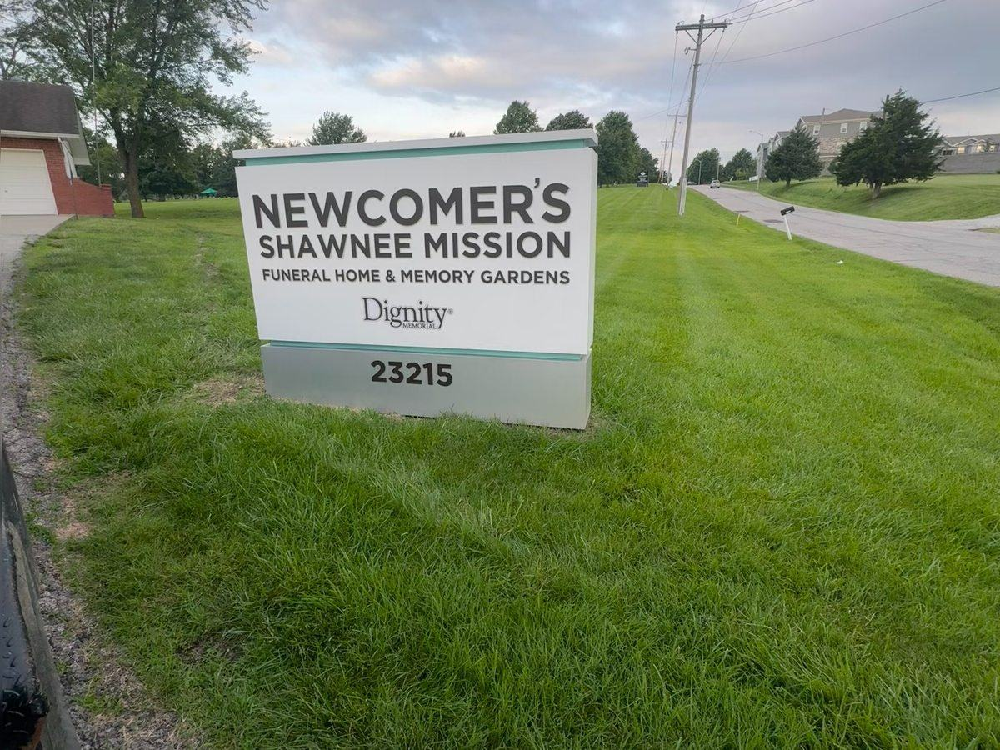

Routine
Mowing & Turf Care
Consistent mowing, trimming, edging, and cleanup with clear service expectations.

Reliable exterior maintenance for property managers, businesses, apartments, associations, churches, offices, retail, and storage facilities.
Well-maintained grounds support safety, curb appeal, and the experience of everyone who visits the property. We build service plans around the site, the season, and your operating needs.
Request a Property ProposalConsistent mowing, trimming, edging, and cleanup with clear service expectations.
Weeding, pruning, edging, mulch, rock, and seasonal presentation work.
Leaf, storm debris, overgrowth, and seasonal reset services with haul-away.
Snow clearing and deicing planning for lots, walks, drives, and access areas.
A straightforward relationship for scope questions, scheduling, and weather updates.
Defined scope, service expectations, and scheduling tailored to the property.
We work with property managers and owners to identify priorities, review the site, and recommend a practical maintenance plan.
Discuss Your Property